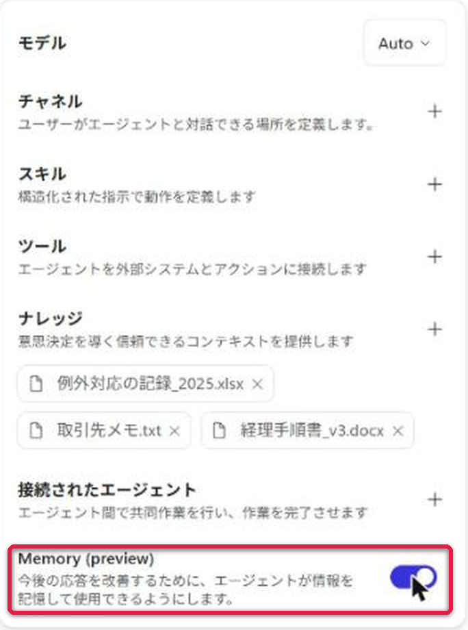
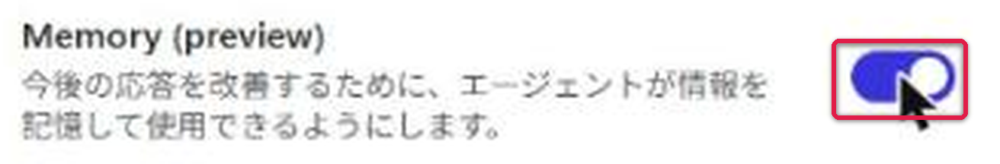

<!DOCTYPE html>
<html lang="ja">
<head>
<meta charset="UTF-8">
<meta name="viewport" content="width=1280, initial-scale=1">
<title>コパスタ Vol.23-3 実際の画面：Memory</title>
<link rel="preconnect" href="https://fonts.googleapis.com">
<link rel="preconnect" href="https://fonts.gstatic.com" crossorigin>
<link href="https://fonts.googleapis.com/css2?family=Noto+Sans+JP:wght@400;500;700;900&display=swap" rel="stylesheet">
<link rel="stylesheet" href="../_base/cs-base.css">
<style>
  .body{gap:14px;padding-bottom:0;}
  .shotcol{flex:0 0 900px;max-width:900px;min-width:0;min-height:0;display:flex;flex-direction:column;gap:6px;}
  .real{flex:0 0 auto;align-self:flex-start;font-size:15px;font-weight:900;color:#fff;background:var(--cs);border-radius:999px;padding:3px 14px;}
  .shots{flex:1;min-height:0;display:flex;gap:10px;}
  .colA{flex:0 0 330px;min-width:0;display:flex;flex-direction:column;gap:8px;}
  .colB{flex:1;gap:8px;min-width:0;display:flex;flex-direction:column;}
  .shot{flex:1;min-height:0;min-width:0;background:#fff;border:2.5px solid var(--cs-line);border-radius:12px;overflow:hidden;display:flex;
    align-items:center;justify-content:center;box-shadow:0 4px 10px rgba(91,33,182,.15);position:relative;padding-top:26px;}
  .shot img{width:100%;height:100%;object-fit:contain;display:block;}
  .lab{position:absolute;left:7px;top:5px;font-size:14px;font-weight:900;color:#fff;background:#E11D48;border-radius:7px;padding:2px 9px;z-index:2;}
  .s1{flex:0 0 auto;} .s1 img{height:auto;}
  .s2{flex:1;}
  .s0{flex:1;}
  .steps{flex:1;min-width:0;display:flex;flex-direction:column;gap:8px;}
  .st{flex:1;min-height:0;display:flex;gap:10px;align-items:center;background:#fff;border:2.5px solid var(--cs-line);border-radius:12px;padding:6px 11px;}
  .st .n{flex:0 0 auto;width:34px;height:34px;border-radius:10px;color:#fff;display:flex;align-items:center;justify-content:center;font-weight:900;font-size:19px;
    background:linear-gradient(135deg,#7C3AED,#C026D3);}
  .st .t{font-size:18px;font-weight:900;color:var(--navy);line-height:1.3;}
  .st .t b{color:var(--cs);}
  .st .t small{display:block;font-size:14.5px;font-weight:700;color:#4B5563;line-height:1.36;margin-top:1px;}
  .st.hint{background:#FFFBEB;border-color:#F59E0B;}
  .st.hint .n{background:linear-gradient(180deg,#FBBF24,#D97706);}
  .nextbar{flex:0 0 auto;margin:10px 18px 22px;display:flex;align-items:center;gap:12px;background:var(--cs-bg);border:2px solid var(--cs-line);
    border-radius:12px;padding:8px 18px;font-size:19px;font-weight:900;color:var(--cs-dark);}
  .nextbar .msi{width:28px;height:28px;}
  .src2{position:absolute;left:20px;bottom:5px;font-size:11.5px;font-weight:500;color:#9CA3AF;}
  .tips{flex:1;min-height:0;display:flex;flex-direction:column;gap:7px;background:#fff;border:2.5px solid var(--cs-line);border-radius:12px;padding:10px 13px;}
  .tips .h{font-size:17px;font-weight:900;color:var(--navy);display:flex;align-items:center;gap:7px;}
  .tips .h img{width:24px;height:24px;}
  .tip{flex:1;min-height:0;display:flex;align-items:center;gap:10px;background:#F9FAFB;border-radius:9px;padding:4px 10px;font-size:15.5px;font-weight:800;color:#1B2A44;line-height:1.38;}
  .tip .say{display:inline-block;background:#E8EBFA;border-radius:8px;padding:1px 9px;margin:0 2px;}
  .tip small{display:block;font-size:13.5px;font-weight:700;color:#4B5563;}
  .tip .ic{flex:0 0 30px;width:30px;height:30px;}
</style>
</head>
<body>
<div id="slide"></div>
<script>
const A="../../pptx/_assets/";
document.getElementById('slide').innerHTML=`
  <div class="titlebar">
    <div class="vol-pill">コパスタ Vol.23</div>
    <div class="part-pill">実際の画面 <b>(3/4)</b></div>
    <div class="title-text">右のパネルのいちばん下、<br><span class="q">Memory のスイッチ</span>だけ</div>
    <div class="ibadge"><span class="pl">+</span></div>
    
  </div>

  <div class="concl">
    <div class="chip">実機</div>
    <div class="txt">エージェントの<b>作成</b>タブを開き、右のパネルの <b>Memory (preview)</b> をオンにして公開する。<br>
      設定する項目はこれだけで、<em>何を覚えるかはAIが決める</em>。</div>
  </div>

  <div class="body">
    <div class="shotcol">
      <div class="real">実際の画面（2026年11月・Copilot Studio）</div>
      <div class="shots">
        <div class="colA">
          <div class="shot s0"><span class="lab">① 作成タブの右のパネル</span></div>
        </div>
        <div class="colB">
          <div class="shot s1"><span class="lab">② オンにしたところ</span></div>
          <div class="tips">
            <div class="h">公開したあと、使う人ができること</div>
            <div class="tip"><svg class="ic" viewBox="0 0 30 30"><circle cx="13" cy="13" r="8" fill="none" stroke="#7C3AED" stroke-width="3"/><path d="M19 19 l7 7" stroke="#7C3AED" stroke-width="3.5" stroke-linecap="round"/></svg>
              <span>チャットで<span class="say">私の記憶を見せて</span><small>どのチャネルでも頼める</small></span></div>
            <div class="tip"><svg class="ic" viewBox="0 0 30 30"><rect x="7" y="9" width="16" height="17" rx="2" fill="none" stroke="#DC2626" stroke-width="2.5"/><path d="M4 9 h22 M12 4 h6" stroke="#DC2626" stroke-width="2.5"/></svg>
              <span><span class="say">○○は忘れて</span>で消す<small>メモリのポータルで1件ずつ・全部も消せる</small></span></div>
            <div class="tip"><svg class="ic" viewBox="0 0 30 30"><rect x="4" y="6" width="22" height="16" rx="4" fill="#E8EBFA" stroke="#5B5FC7" stroke-width="2"/><path d="M10 22 l-3 5 l7 -5" fill="#E8EBFA" stroke="#5B5FC7" stroke-width="2"/></svg>
              <span>最初のチャットに案内が出る<small>Teams と Microsoft 365 Copilot のとき</small></span></div>
          </div>
        </div>
      </div>
    </div>
    <div class="steps">
      <div class="st"><span class="n">1</span><span class="t"><b>作成</b>タブを開く<small>エージェントを開いた画面</small></span></div>
      <div class="st"><span class="n">2</span><span class="t">右のパネルのいちばん下<small>接続されたエージェントの下</small></span></div>
      <div class="st"><span class="n">3</span><span class="t"><b>Memory</b> をオン<small>表示は Memory (preview)</small></span></div>
      <div class="st"><span class="n">4</span><span class="t"><b>公開</b>して Teams で使う<small>覚えるのは使う人ごと</small></span></div>
      <div class="st hint"><span class="n">!</span><span class="t">オフでもすぐは消えない<small>新しく使わなくなるだけ</small></span></div>
    </div>
  </div>

  <div class="nextbar">→ 消えるまでの期間・見られる人の早見表は4枚目へ</div>
  <div class="src2">出典：Microsoft Learn（エージェントのメモリの概要／メモリとプライバシーの管理）／撮影は 2026年11月の Copilot Studio（PA45 Demo 環境）・撮影後にオフへ戻した</div>
`;
</script>
</body>
</html>
